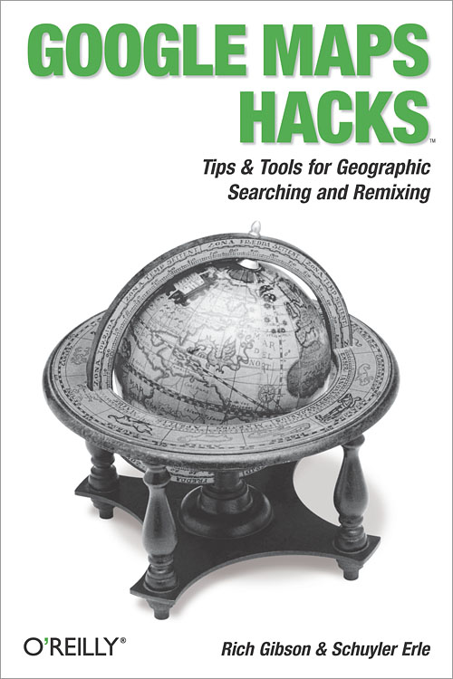
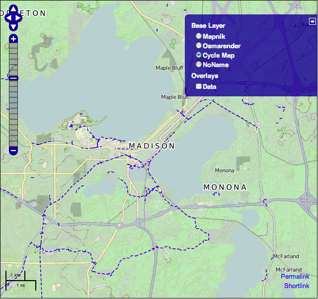

Intro
The goal:
Thematic mapping in online mapping frameworks
Frameworks
What is a web mapping framework?
- loads data in various geo formats
- map rendering
- handle coordinate systems, transforms, etc.
- map navigation (pan, zoom, search)
More advanced
- geocoding
- transform vector data to various map projections
- GIS functions, such as area, intersect, buffer, etc.
- built-in styling methods for vector data
Big name
-
Google (2005)

- Yahoo (2006)
- MapQuest (2007)
- Google Earth web API (2010)
Flash-specific
- Modest Maps
- AF Components
- Open Scales
OpenLayers (2005)

Polymaps (2010)